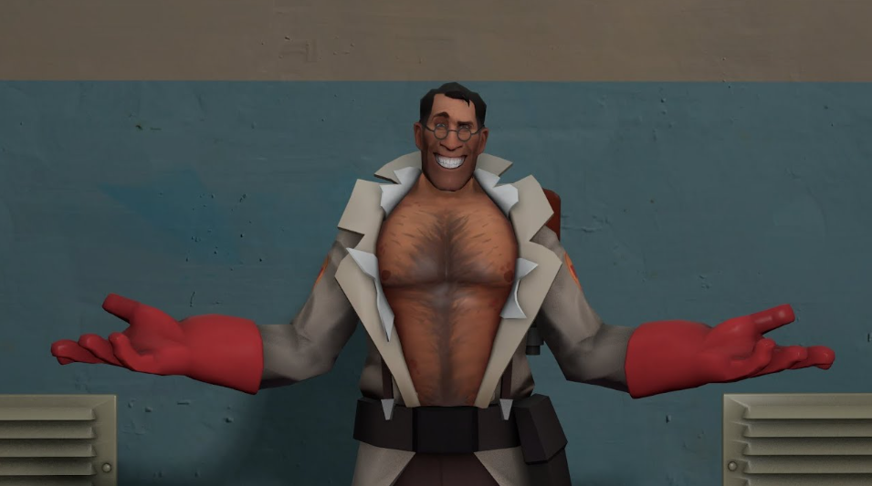

Medic TF2 :3
"Vould you like a second opinion? You are also ugly!"
About Medic TF2 :3
Germany's top fucking guy who totally didn't commit war crimes!!! >:3
lowkey he has the best personality in TF2 and was my first main
Medic's Characteristics
- Healing
- Kritzkrieg
- Uber
- Your Team Loses If You Don't have Him :3
Other Cool TF2 Characters :3
Engineer
Sniper
Scout